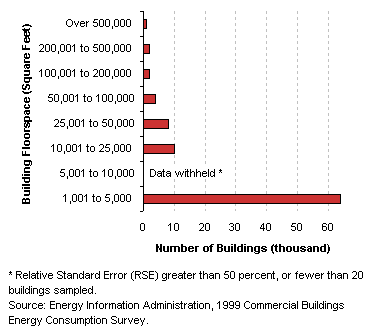
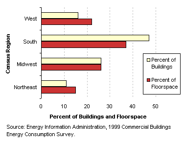
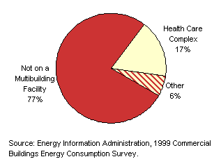
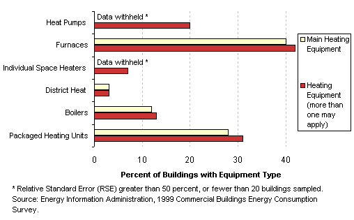
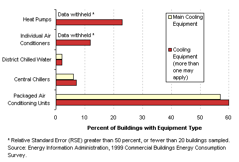
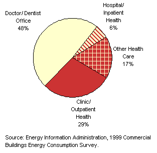
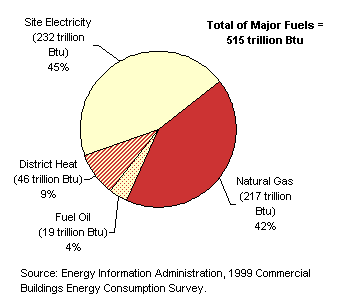

| |
|
Characteristics
by Activity...
Health Care
|
Health
care buildings are those used as diagnostic and treatment facilities for
both inpatient and outpatient care. Doctor's and dentist's offices are considered
health care if they use any type of diagnostic medical equipment and office
if they do not. Skilled nursing or other residential care buildings are
categorized as lodging.
Basic Characteristics
[ See also: Equipment | Activity
Subcategories | Energy Use
]
|
Health Care
Buildings...
- Health care buildings in the South tended to
be smaller and were more numerous than those in other regions
of the country.
- Buildings on health care complexes tended to
be newer than those not on multibuilding facilities. The median
age for buildings on health care complexes was 9.5 years, compared
to 29.5 years for health care buildings not on a multibuilding
facility.
- Buildings on health care complexes also tended
to be larger than those not on complexes. The average building
on a complex was 79.9 thousand square feet, compared to 11.2 thousand
square feet for buildings not on complexes.
Tables:
Top
|
|
Number
of Health Care Buildings by Building Size Category

Buildings
and Floorspace of Health Care Buildings by Census Region

Health
Care Buildings on Multibuilding Facilities by Type of Facility

|
Equipment
Table: Buildings,
Size, and Age Data by Equipment Types
Predominant
Heating Equipment Types in Health Care Buildings

Predominant Cooling Equipment Types in Health Care Buildings

Top
Activity
Subcategories
Building
respondents who reported that their building was a health care building
were then asked to place the building into the following more specific
categories:
- a hospital
or other inpatient health care building
- a doctor's
or dentist's office
- a clinic
or other outpatient health care building
- a mental
health institution
- an inpatient
rehabilitation center
- an outpatient
rehabilitation center
- a veterinarian's
office
- some other
type of health care
|
|
Health
Care Buildings by Subcategory |
There
were enough buildings in the responding sample to report statistics for
hospitals/other inpatient health care buildings, doctor's/dentist's offices,
and clinics/outpatient health care buildings. The rest of the health care
activities have been combined into the other health care category.
Table: Selected
Data by Type of Health Care Building
Top
Energy
Use
Health
care buildings used 515 trillion Btu of total energy, which was 9
percent of total energy consumption for all commercial buildings.
Since they accounted for only 4 percent of commercial floorspace,
this means that their energy intensity was well above average.
|
| Health care buildings were one of the
few building types to use a significant amount of district heat.
Tables:
Reference:
What is a Btu? |
|
Energy
Consumption in Health Care Buildings by Energy Source

|
The total energy
consumption data in the figures and tables above are “site energy,”
which includes only the amount of electricity consumed within the
building; energy use can also be expressed as “primary energy,”
which includes the energy consumed during the generation and transmission
of electricity. Health care buildings used 701 trillion Btu of primary
electricity, so their total primary energy consumption was 984 trillion
Btu, or 8 percent of total primary consumption for all commercial buildings.
Top
Specific questions may be directed to:
Joelle Michaels
joelle.michaels@eia.doe.gov
CBECS Manager
Release date: July 24, 2002
Page last modified:
May 4, 2009 2:52 PM
http://www.eia.gov/consumption/commercial/data/archive/cbecs/pba99/healthcare/healthcare.html
If you are having any technical problems with this
site, please contact the EIA webmaster at wmaster@eia.doe.gov. |